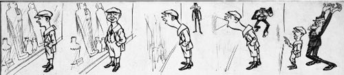

|
Modern
Cartoons

Above: Henry Mayo Bateman (1887-1970),
The Boy Who Breathed on Glass in the British Museum (detail)
1916, Pen and black ink., 505 x 364 mm (full sheet) 1951-8-27-1,
© H. M. Bateman Designs Ltd
The
Department of Prints and Drawings has the most extensive collection
of British graphic satire from the seventeenth to the nineteenth
centuries. This includes a comprehensive group of prints by William
Hogarth (1697-1764); satirical prints or caricatures by James
Gillray (1756-1815), Thomas Rowlandson (1756-1827) and George Cruikshank
(1792-1878); drawings and lithographs by John 'HB' Doyle (1797-1868),
and work by many other artists. The modern use of the word 'cartoon'
as applied to humorous or satirical representations, dates from
1843 when John Leech (1817-1864) published a facetious drawing directed
against the exhibition of the cartoons, i.e. full-scale preparatory
designs, for the decorative scheme proposed for the new Houses of
Parliament. From the mid-nineteenth century onwards there are cartoons
by many of the generations of contributors to the magazine Punch,
which was founded in 1841, including Richard Doyle (1824-1883) and
Leech, and later artists such as Charles Keene (1823-1891), George
Du Maurier (1834-1896), Phil May (1864-1903) and Sir John Tenniel
(1820-1914). Furthermore, there are chromo-lithographs introduced
by Vanity Fair (1869-1913) and some original drawings for
the first British comic, Ally Sloper's Half Holiday (first
published in 1884), by William Giles Baxter (1856-1888) and William
Fletcher Thomas (fl. 1885-1922).
Caricatures
published as single-sheet prints were largely superseded by the
development of new printing technology and the advent of mass circulation
newspapers and magazines in the latter part of the nineteenth century.
The emphasis for the period thereafter is thus on acquiring a selection
of the original drawings produced by the leading cartoonists. The
Department has drawings by many of the 'classic' cartoonists, including
Max Beerbohm (1872-1956), William Heath Robinson (1872-1944), Henry
Mayo Bateman (1887-1970) and David Low (1891-1963). It is especially
fortunate to have numerous drawings by Ronald Searle (b.1920), one
of the most influential draughtsmen of the second half of the twentieth
century. One group of drawings includes preparatory studies for
a series of medals produced by the French Mint in 1976-1977 to celebrate
The Fathers of Caricature (the medals belong to the Department
of Coins and Medals). The other group consists of his drawings for
The Rake's Progress published in Punch and as
a separate book in 1954-1955. Also of note are four drawings by
Ralph Steadman (b.1936) and a varied group of cartoons and strips
by Wally 'Trog' Fawkes (b.1924). There are amusing pocket cartoon
drawings by Hector Breeze (b.1928), David Austin (b.1935), Tony
Husband (b.1950) and Matthew 'Matt' Pritchett (b.1965).
During the last
few years drawings by such diverse artists as Eric Fraser (1902-1983),
R.S. Sherriffs (1906-1960), Graham 'Pont' Laidler (1908-1940), 'ffolkes'
(1925-1988), John Glashan (1927-1999), John Jensen (b.1930), Mark
'Marc' Boxer (1931-1988), Nicholas Garland (b.1935), Ed McLachlan
(b.1940), Posy Simmonds (b.1945), and Steve Bell (b.1951) have been
acquired through purchase and gift. Terence 'Larry' Parkes (b.1927)
made a group of ten drawings inspired by the British Museum and
generously presented them to the Department, while cartoonist, illustrator
and writer Mel Calman (1931-1994), not only presented examples of
his own work but also encouraged other cartoonists to do likewise.
There remains
an enduring tradition of graphic satire. In this country the daily
newspapers and periodical publications such as Private Eye
and The Spectator, among others, continue to publish cartoons.
The Department of Prints and Drawings offers an unparalleled opportunity
to study the history of graphic satire within the context of its
precursors including the work of foreign artists such as Goya and
Daumier.
Works
in Other Collections
| London |
The
Cartoon Art Trust |
| |
National
Portrait Gallery |
| |
Punch
Cartoon Library and Archive |
| |
Victoria
and Albert Museum |
| UK |
The Centre
for Study of Cartoons and Caricatures, University of Kent, Canterbury |
Further
Reading
Bryant, M. and
Heneage, S. Dictionary of British Cartoonists and Caricaturists
1730-1980. Scolar Press, 1994
Feaver, W. and
Gould, A. Masters of Caricature from Hogarth and Gillray to
Scarfe and Levine. Weidenfeld and Nicolson, 1981
Godfrey, R.
English caricature: 1620 to the Present. Victoria and Albert
Museum, 1984
|